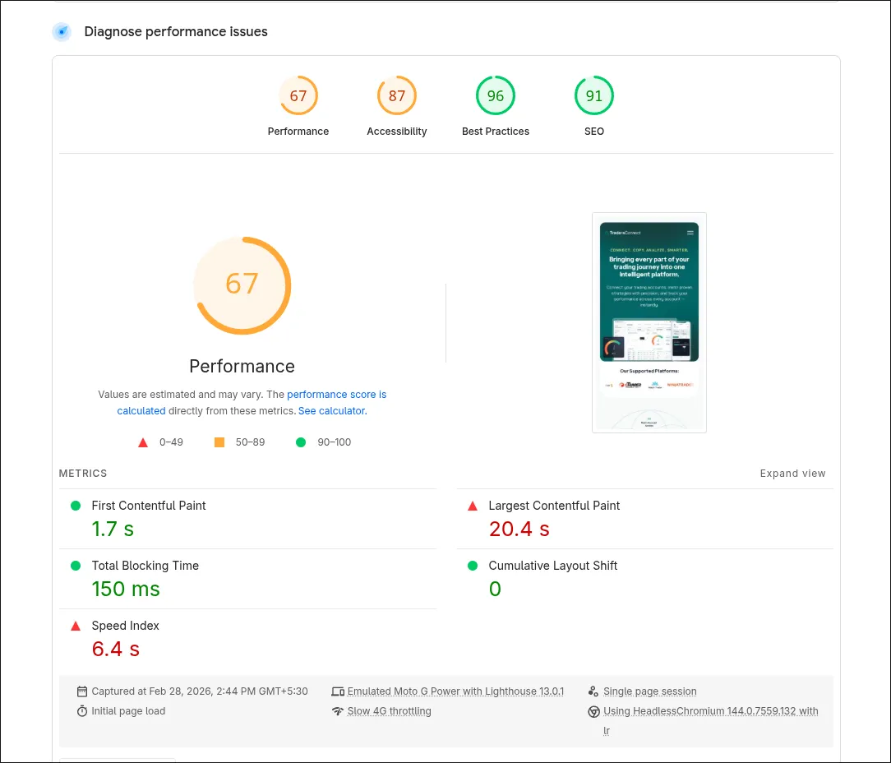
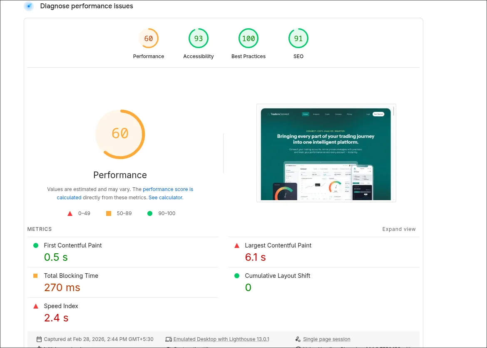
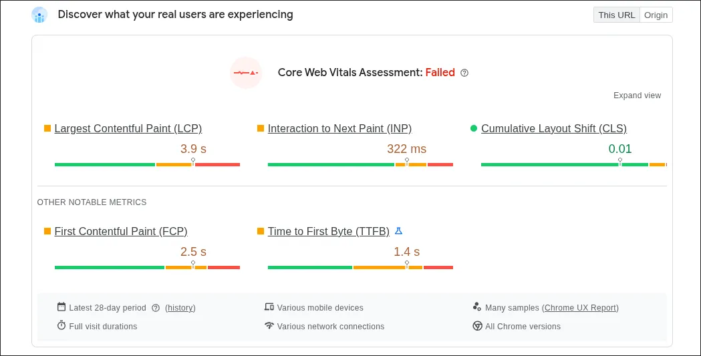
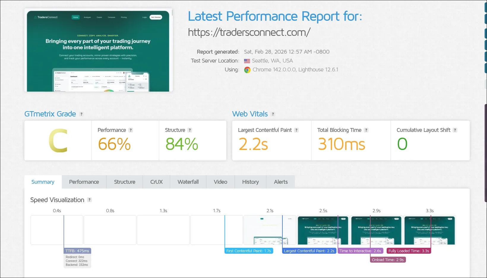
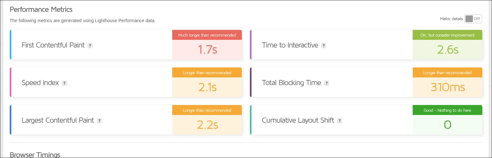
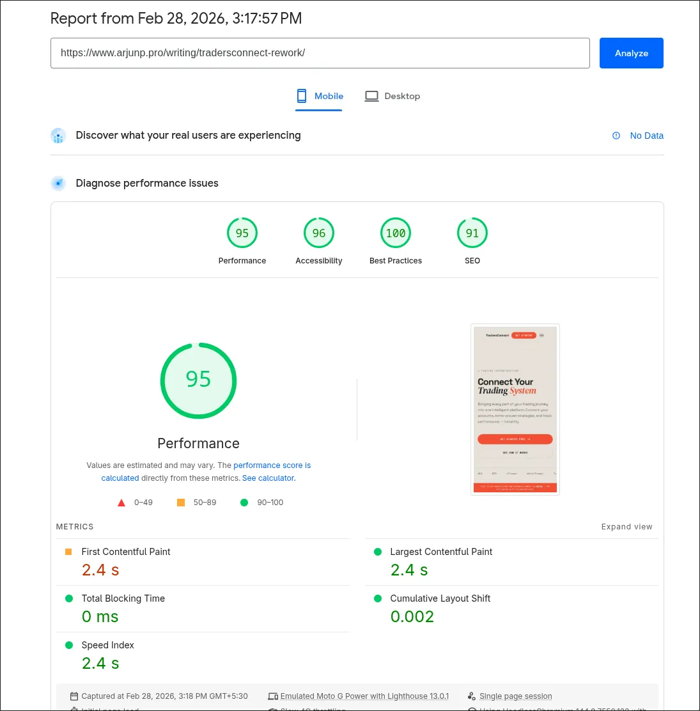
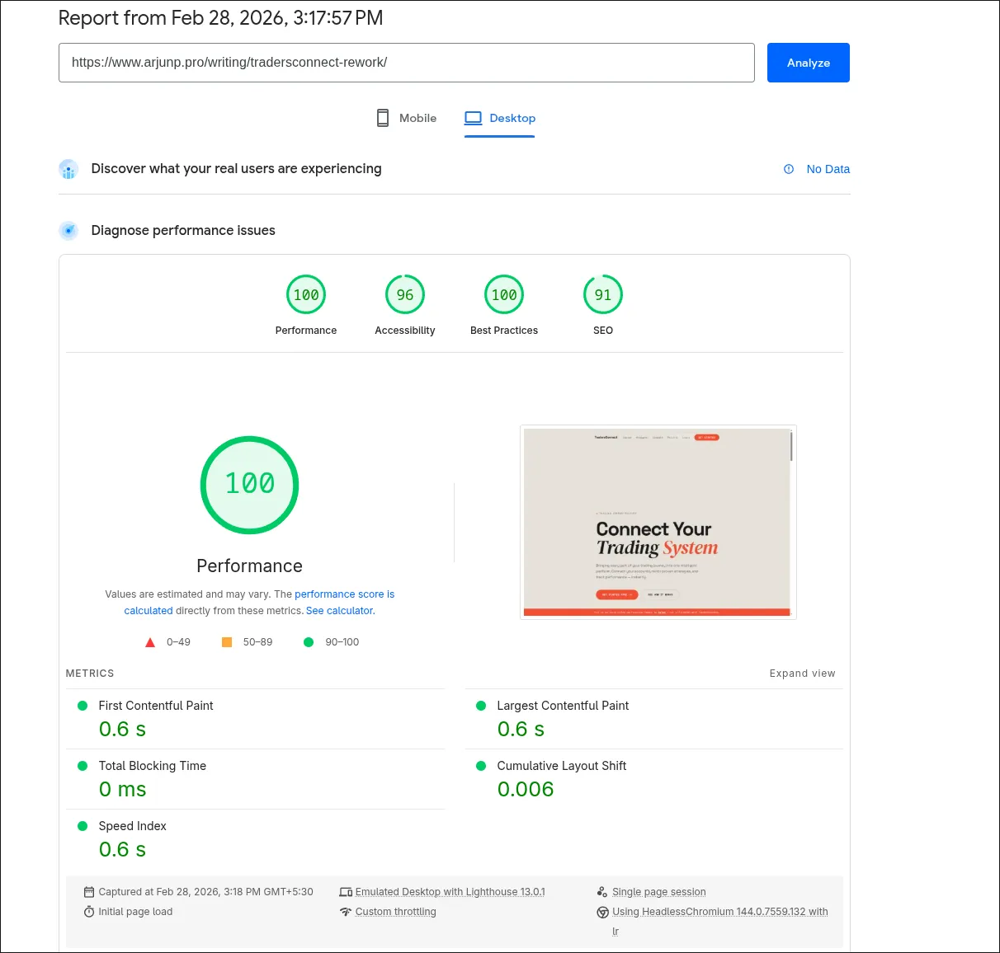
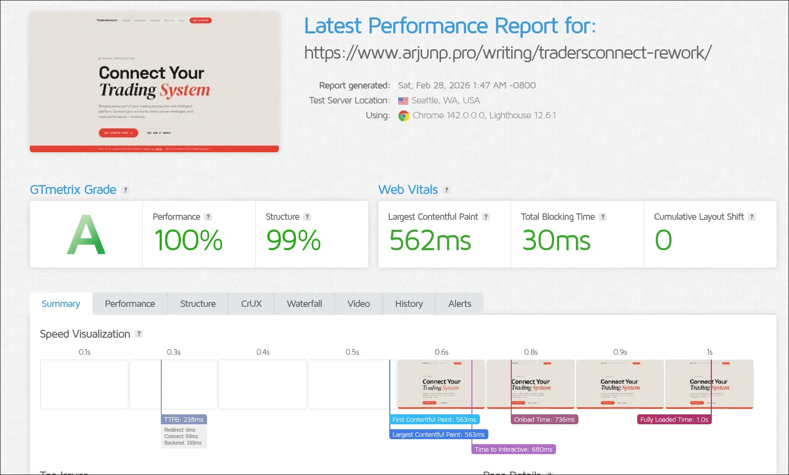

28 February 2026 · 6 min read
Rebuilding a landing page for performance
A static landing-page rebuild, measured with Lighthouse and GTmetrix.
Disclaimer: This is an unsolicited redesign and performance audit. I am not affiliated with, employed by, or endorsed by TradersConnect. This project is a technical exercise to demonstrate frontend performance optimization skills.
IWhy TradersConnect
I used TradersConnect’s landing page for an independent performance exercise. At the time of the audit, the field report showed a 3.9s LCP and 322ms INP. I wanted to test a smaller static implementation.
I rebuilt the page around its content and measured the result. The exercise did not include the product’s application or backend.
IIAudit
I recorded Lighthouse, PageSpeed Insights, CrUX, and GTmetrix results for the original page. The screenshots below document those measurements at the time of the audit.
Lighthouse
The original mobile Lighthouse run recorded a 20.4s LCP. This is a lab result from that test, rather than a timing measured for every visitor.


Core Web Vitals (CrUX)
The CrUX report provided a separate view of real-user experience. The captured report did not pass the Core Web Vitals assessment.

GTmetrix
GTmetrix confirmed the pattern - Grade C with 66% performance. The speed visualization shows the page doesn't become visually complete until 2.5s, with full load at 3.3s.


Key Issues Found
- Mobile lab LCP: the captured Lighthouse run recorded 20.4s.
- Lab blocking time: recorded Total Blocking Time ranged from 150–310ms across the tools.
- Field server response: the CrUX report showed a 1.4s TTFB.
- Field interaction latency: the CrUX report showed a 322ms INP.
- Field assessment: the captured CrUX report did not pass Core Web Vitals.
IIIApproach
I kept the rebuild static and used typography and CSS for its visual structure. This reduced the amount of code and imagery needed to present the page.
Performance Strategy
- Static implementation: HTML and CSS provide the page without a JavaScript framework.
- Inline page styles: the page’s layout CSS is in the document head. Google Fonts still adds an external stylesheet request.
- Font loading: Space Grotesk is self-hosted. DM Serif Display and Space Mono load through Google Fonts with
display=swap. - No photographic assets: typography, layout, and CSS effects provide the visual structure.
- Small control script: IntersectionObserver handles navigation state and section reveals. The script also controls the mobile menu.
- Texture: an inline SVG filter adds paper grain without a separate image request.
Design Decisions
The rebuild uses a different visual design. This means the results compare two implementations and designs; they do not isolate the framework as the only variable.
- Space Grotesk provides headings, DM Serif Display provides italic display text, and Space Mono provides data labels.
- Layout, typography, and CSS effects supply visual variation.
- Terminal-style product previews reference the trading tools described on the original page.
IVImplementation
Single File Architecture
The entire page lives in one HTML file. No build step, no bundler, no node_modules. CSS custom properties handle theming, clamp() handles responsive typography, and CSS Grid handles layout at every breakpoint. The total file size is 43KB.
CSS Animations Instead of JS Libraries
The feature cards use CSS animations for stacked cards, a blinking cursor, and a moving scheduler indicator. These effects do not require an animation library.
/* Card shuffler: pure CSS, no JS */
@keyframes shuffle1 {
0%, 70% { transform: translateX(-50%) rotate(-2deg) translateY(0); }
80% { transform: translateX(-50%) rotate(3deg) translateY(-80px); opacity: 0; }
81% { transform: translateX(-50%) rotate(-1deg) translateY(-20px); opacity: 0.4; z-index: 1; }
100% { transform: translateX(-50%) rotate(-2deg) translateY(0); opacity: 1; z-index: 3; }
}
/* Scheduler ping: replaces JS-driven pulse */
@keyframes sched-ping {
0% { transform: scale(0.8); opacity: 0.5; }
100% { transform: scale(2.2); opacity: 0; }
}All scroll-triggered reveals and the navbar state change run on a single IntersectionObserver setup. The entire JavaScript for the page:
// Navbar: transparent → solid on scroll
const n=document.querySelector('.nav'),h=document.querySelector('.hero');
new IntersectionObserver(([e])=>
n.classList.toggle('scrolled',!e.isIntersecting),
{threshold:.1}
).observe(h);
// Section reveals
const r=document.querySelectorAll('.reveal');
const o=new IntersectionObserver(e=>e.forEach(i=>{
if(i.isIntersecting){i.target.classList.add('visible');o.unobserve(i.target)}
}),{threshold:.08,rootMargin:'0px 0px -40px 0px'});
r.forEach(el=>o.observe(el));
// Mobile menu toggle + auto-close on link tap
const hb=document.querySelector('.nav-hamburger');
if(hb){hb.addEventListener('click',()=>{
const open=n.classList.toggle('nav-menu-open');
hb.setAttribute('aria-expanded',open)
});}Noise Texture Without Images
An inline SVG with an feTurbulence filter provides the paper texture. The overlay uses 4% opacity and does not require a separate image request.
<svg class="noise" aria-hidden="true">
<filter id="n">
<feTurbulence type="fractalNoise" baseFrequency="0.65"
numOctaves="3" stitchTiles="stitch"/>
<feColorMatrix type="saturate" values="0"/>
</filter>
<rect width="100%" height="100%" filter="url(#n)"/>
</svg>Responsive Without Media Query Hell
CSS clamp() handles most of the responsive scaling. The hero heading goes from 52px to 96px, section titles from 32px to 52px, all without breakpoint-specific overrides. Explicit media queries only handle structural changes like grid column counts and mobile navigation.
/* Typography scales fluidly: no breakpoints needed */
.hero h1 { font-size: clamp(52px, 9vw, 96px); }
.section-title { font-size: clamp(32px, 4.5vw, 52px); }
.metric-number { font-size: clamp(32px, 3.5vw, 48px); }
/* The "TC" watermark scales from 280px to 520px */
.hero-watermark { font-size: clamp(280px, 42vw, 520px); }VResults
The following runs compare the original page with the static rebuild. Both the implementation and visual design changed.
Lighthouse - Before vs After


GTmetrix - Before vs After

Summary
The recorded rebuild scored 100 on desktop Lighthouse, 95 on mobile, and Grade A on GTmetrix. GTmetrix reported a fully loaded time of 1.0s, compared with 3.3s for the original. These measurements describe the tested pages and conditions.
VILive Demo
The links below open the original site and my static demo. Fresh test results may differ from the recorded runs.
VIILimitations & Next Steps
The rebuild covers the landing page only. Without access to the original infrastructure or application, I could not test a full product migration or measure production impact.
What I Couldn't Do
- No infrastructure access: I could not change the original site’s caching, compression, or server configuration.
- No production measurements for the rebuild: its results come from lab tests rather than real-user monitoring.
- No product integration: the demo does not include authentication, dashboards, or backend behavior.
- External font requests: two typefaces still depend on Google Fonts.
What I'd Do With Full Access
- Measure server response and review caching before choosing an infrastructure change.
- Self-host the remaining fonts and compare the effect on loading.
- Evaluate repeat-visit caching if the product’s requirements justify it.
- Add real-user monitoring to track the deployed experience.
- Audit the authenticated product separately before proposing similar changes.